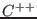

Next: Bytecode vs Machine Code Up: Terminology Previous: Syntax and Semantics Contents

In other words, interpreter bluecan execute program in machine code, making
some bluereal machine ![[*]](crossref.png) simulation.
But machine code for real
processor ineffective in simulation1.3, and especially ineffective in compiler code generation. That's why
blueall modern interpreters use bytecode for low-level program
representation.
simulation.
But machine code for real
processor ineffective in simulation1.3, and especially ineffective in compiler code generation. That's why
blueall modern interpreters use bytecode for low-level program
representation.